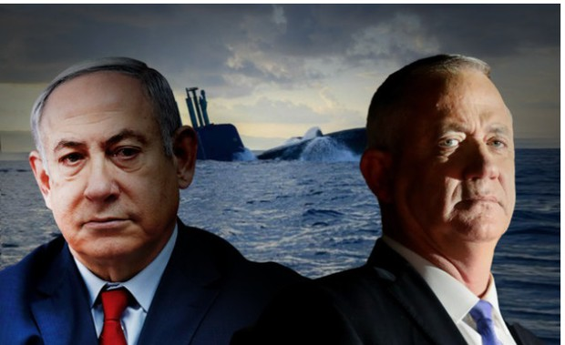
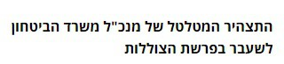
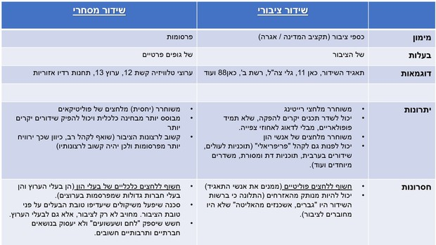

דיווח עיתונאי
דיווח עיתונאי – מידע שמופק ומופץ על ידי עיתונאים ובכלי תקשורת חדשותיים. הדיווח העיתונאי מופק על פי כללים ונורמות של העבודה העיתונאית. לפי השיקולים של ערך עיתונאי (האם הידיעה ראויה להפצה או לא), במבנה שיכיל את חמשת הממים (מי, מה, מתי, מקום, מדוע) ועליו לעמוד בנורמות ובערכים המקצועיים של העיתונאים:
אובייקטיביות: אי הבעת עמדה, נייטרליות, דיווח עובדתי נטול רגשות. הבחנה ברורה בין עובדה לדעה, סיפוק מידע מהימן.
דיוק: יש לאמת כל דבר לפני שהוא מתפרסם. אין לפרסם דבר שאינו מדויק.
איזון: מתן אפשרות שווה לצדדים השונים להשתתף בדיונים או בעימותים, מתן זמן ומקום זהה, מתן אפשרות להגיב.
תהליך מיון וברירה
אחת העבודות המרכזיות של אנשי העיתונות היא עבודה של מיון וברירה. עיתונאים ועורכים צריכים לברור אלו אירועים יכנסו לדיווח העיתונאי בחדשות (בטלוויזיה, באתר, בעיתון המודפס) ואלו יישארו בחוץ.
מבין אלו שיכללו בחדשות, אלו יקבלו מקום מרכזי יותר ואלו יוצנעו יותר. כדי לבצע עבודה זו כל דיווח וכל אירוע נמדד לפי הערך החדשותי שלו.
הערך החדשותי נקבע על-פי מספר קריטריונים
- חשיבות: מבחינת התייחסות לחיי האדם ומצבו הקיומי.
- רלוונטיות: שייכות ונגיעה של האירוע לקהל היעד.
- ייחודיות: אירוע חריג, שונה ומפתיע.
- אישיות מפורסמת: אירועים העוסקים בחייהם של אנשי ציבור, דמויות מפתח בפוליטיקה, בכלכלה, בחיים החברתיים או התרבותיים.
- אנושיות: עניין אנושי הגובל בהתרחשות נס, אירוע הטעון ברגשות עזים.
- עדכניות: מידע חדש התורם להבנתנו את המציאות ומסייע לנו בקביעת עמדה.
הערך החדשותי יקבע כאמור, אלו אירועים יכנסו לדיווח ואלו יישארו בחוץ וכן יקבע את הסדר ומידת המרכזיות של הדיווח.
עובדה ודעה
עובדה: הינה מידע בדוק, נתונים מדויקים, האירוע שהתרחש במציאות כמו שהוא, בלי פרשנות. עובדות בדרך כלל ידווחו על-ידי משפטים המכילים נתונים מספריים, משפטים המתארים באופן ניטראלי ונטול שיפוטי את המציאות. משהו שהתרחש.

דעה: עמדה התלויה בגישה האישית של המספר לגבי מה שהתרחש. ניתן לזהות דעה כאשר מזהים משפטים המכילים מטאפורות, דימויים ציוריים, ביטויים של רגשות, שיפוט חיובי ושלילי באמצעות שמות תואר, כמו: טוב, רע, יפה, נהדר, מכוער, עמדה בעד או נגד, גלויה או סמויה.
תקשורת מסחרית וציבורית
תקשורת מסחרית היא זו הממומנת על ידי פרסומות.
תקשורת ציבורית ממומנת מכספי ציבור (תקציב המדינה או אגרה מיוחדת לשם כך).
מדינת ישראל אימצה את הדגם של השידור הציבורי (מהמקור הבריטי) ולא את השידור המסחרי (האמריקאי), בעיקר כדי שלא להוציא משאב כל כך חשוב מידי הממסד לידיים פרטיות. ההבנה הייתה שלרדיו ולטלוויזיה כוח חזק מאוד והממסד ביקש לשמור אותו אצלו ולא "לשחרר" אותו לגורמים פרטיים.
ההיגיון מאחורי המודלים
תקשורת ציבורית
תקשורת היא משאב ציבורי, יש לה כוח להשפיע על הציבור והיא מכשיר מרכזי בחיים הפוליטיים, החברתיים והתרבותיים.
- היא צריכה להיות שייכת לציבור.
- היא צריכה להיות משוחררת מלחצים מסחריים של רייטינג (כדי שלא ישדרו בעיקר למי שהמפרסמים מעוניינים בהם, למשל, לא לקבוצות מיעוט או אנשים חלשים כלכלית).
תקשורת צריכה לספק לקהל מה שהוא צריך (לחנך את הקהל, למשל ז'אנרים איכותיים).
תקשורת מסחרית
התקשורת צריכה להיות פתוחה ומגוונת ככל האפשר. צריך מינימום התערבות של המדינה בתחום כל כך חשוב כמו תקשורת. ההנחה היא שהתקשורת תרצה מקסימום קהל (להרוויח יותר מפרסומות) ולכן תספק לקהל מה שהוא רוצה. התקשורת אינה צריכה לחנך את הקהל.
רשימת תחנות הרדיו של תאגיד השידור הציבורי
הציבור הישראלי מממן מכספו מגוון תחנות שידור למרות שרבים לא יחשפו למרבית התחנות. המחשבה היא ציבורית ולא כלכלית: להקיף את מגוון הקבוצות בישראל.